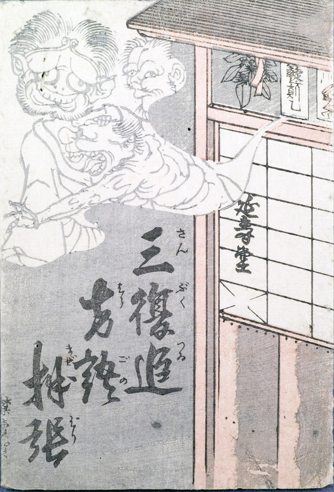

3体の化物が軒下に張られた札から飛び出しているようにみえる。中央には頭に金輪をはめた化物。その手前には半裸で獣の顔をした化物。奥には顔の左右の形が異なる化物が覗いている。
出典：親書誌：U426_nichibunken_0146：三複追方語拌張；サンブクツイホウゴノマゼバリ／日付：2009／資源識別子：U426_nichibunken_0146_0001_0000
Copyright (c)2010- International Research Center for Japanese Studies, Kyoto, Japan. All rights reserved.